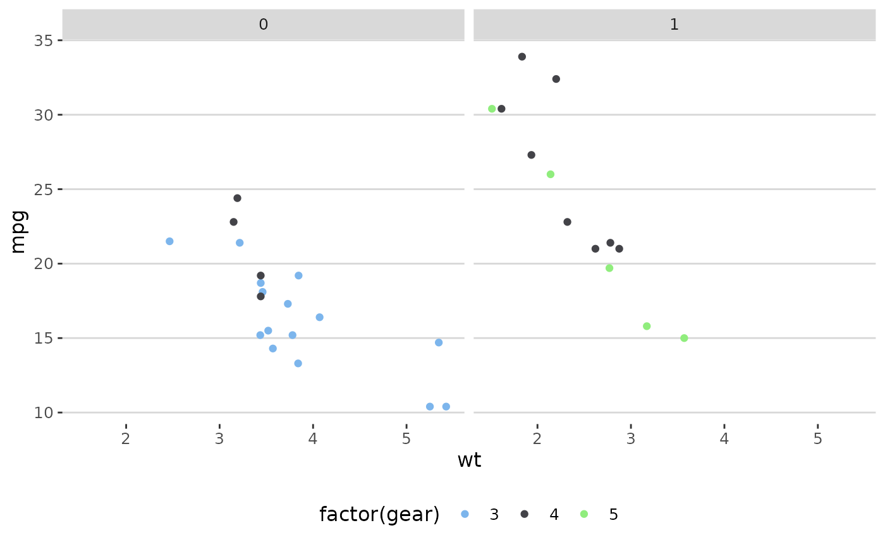
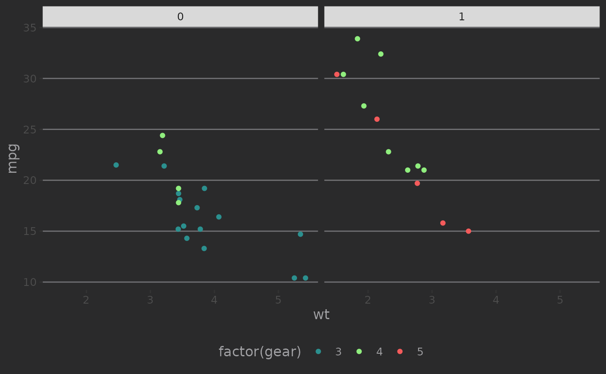
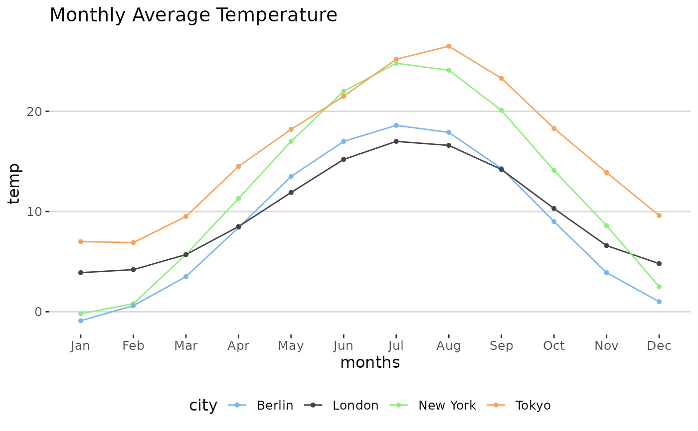
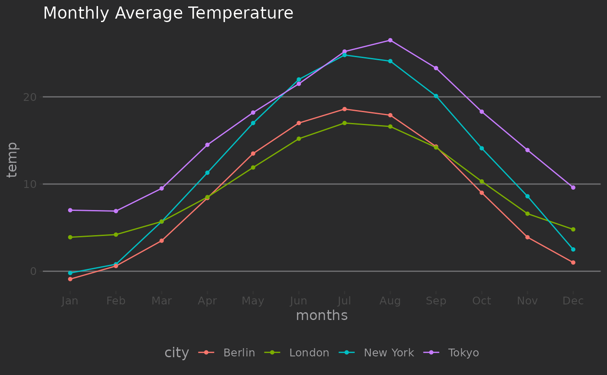

Theme based on Highcharts plots.
Usage
theme_hc(
base_size = 12,
base_family = "sans",
style = c("default", "darkunica"),
bgcolor = NULL
)Arguments
- base_size
base font size, given in pts.
- base_family
base font family
- style
The Highcharts theme to use
'default','darkunica'.- bgcolor
Deprecated
Examples
library("ggplot2")
p <- ggplot(mtcars) +
geom_point(aes(
x = wt, y = mpg,
colour = factor(gear)
)) +
facet_wrap(~am)
p + theme_hc() + scale_colour_hc()

p + theme_hc(bgcolor = "darkunica") +
scale_colour_hc("darkunica")
#> Warning: `bgcolor` is deprecated. Use `style` instead.

dtemp <- data.frame(
months = factor(rep(substr(month.name, 1, 3), 4),
levels = substr(month.name, 1, 3)
),
city = rep(c("Tokyo", "New York", "Berlin", "London"),
each = 12
),
temp = c(
7.0, 6.9, 9.5, 14.5, 18.2, 21.5,
25.2, 26.5, 23.3, 18.3, 13.9, 9.6,
-0.2, 0.8, 5.7, 11.3, 17.0, 22.0,
24.8, 24.1, 20.1, 14.1, 8.6, 2.5,
-0.9, 0.6, 3.5, 8.4, 13.5, 17.0,
18.6, 17.9, 14.3, 9.0, 3.9, 1.0,
3.9, 4.2, 5.7, 8.5, 11.9, 15.2,
17.0, 16.6, 14.2, 10.3, 6.6, 4.8
)
)
ggplot(dtemp, aes(x = months, y = temp, group = city, color = city)) +
geom_line() +
geom_point(size = 1.1) +
ggtitle("Monthly Average Temperature") +
theme_hc() +
scale_colour_hc()

ggplot(dtemp, aes(x = months, y = temp, group = city, color = city)) +
geom_line() +
geom_point(size = 1.1) +
ggtitle("Monthly Average Temperature") +
theme_hc(bgcolor = "darkunica") +
scale_fill_hc("darkunica")
#> Warning: `bgcolor` is deprecated. Use `style` instead.
